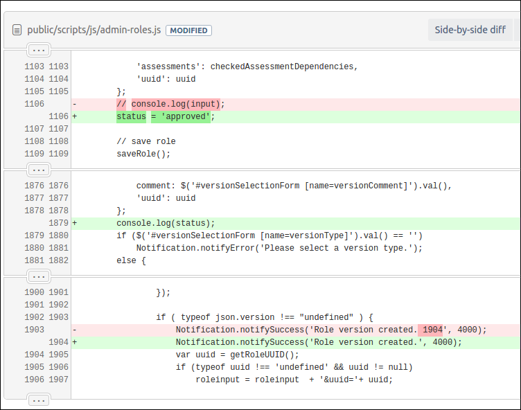
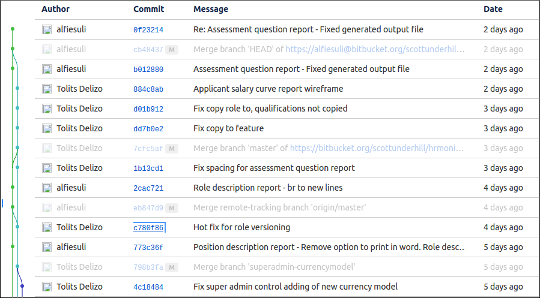

CLI, GIT and DOM
(wtf?)
© 2017 Tolits Delizo, MIT / @tolitsAhaMoment
CLI
Command-Line Interface
aka Console User Interface
A CLI (command line interface) is a UI to a computer's operating system or an app in which the user responds to a visual prompt by typing in a command on a specified line, receives a response back from the system, and then enters another command, and so forth.
Anatomy of a CLI
~ cd /directory
>>> x = x + 1
~ ls -la
~ rm -rf *
Prompt command param1 param2 -{option}
Cool Story
Trick someone to use the 'rm -rf *' command on a UNIX-based computer. This commands deletes everything on their computer. ;)
This happened to Toy Story 2
Command line basics
# list files in a directory
~ ls
# change directories
~ cd
~ cd ~
~ cd -
# create file
~ touch filename
# create directory
~ mkdir directory_name
# edit files
~ nano path_to_file
# remove file
~ rm
GIT
like a really epic save button
GIT is a version control system (VCS)
A save (commit) in Git would record differences of files and folders AND keep a historical record of each save.
Types of VCS
Local Version Control Systems

Types of VCS
Centralized Version Control Systems

Types of VCS
Distributed Version Control Systems

Why use GIT?
History of Files
Why use GIT?
Distributed Development
Why use GIT?
Community
Git is very popular among open source projects. This means it’s easy to leverage 3rd-party libraries and encourage others to fork your own open source code.
GIT Terms (1)
Version Control: any system that allows you to understand the history of the file and how it has progressed
Commit: an annotated “snapshot” of the differences made to the system at a given point in time
GIT Terms (2)
Local: refers to the computer you’re working on this very minute
Remote: refers to an online location
Repository (repo): a special folder configured with Git superpowers containing all the files pertaining to your project/system
Github: takes your local commit history and hosts it remotely so that you can access it from any computer
GIT Terms (3)
Pushing: the action of taking local Git commits (and whatever work these encompass) and putting them online on Github
Pulling: the action of taking online Github commits and bringing them into your local machine
DOM
Document Object Model
The Document Object Model (DOM) represents that same document so it can be manipulated. The DOM is an object-oriented representation of the web page, which can be modified with a scripting language such as JavaScript (more on this soon).
How does DOM look like?
Further reading
- Linux CLI Basics: https://www.linux.com/learn/how-use-linux-command-line-basics-cli
- Git Guide: http://rogerdudler.github.io/git-guide/
- DOM: https://developer.mozilla.org/en-US/docs/Web/API/Document_Object_Model/Introduction
- What is the DOM: https://css-tricks.com/dom/